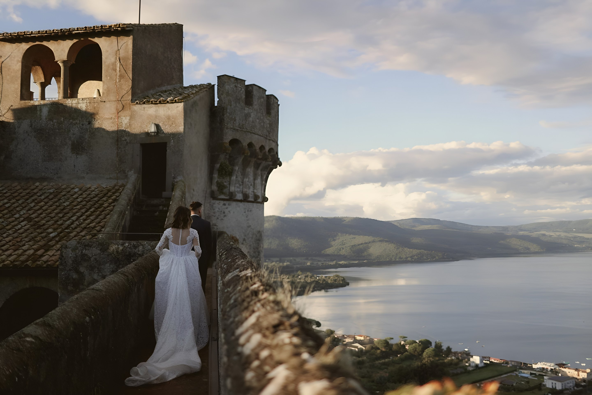
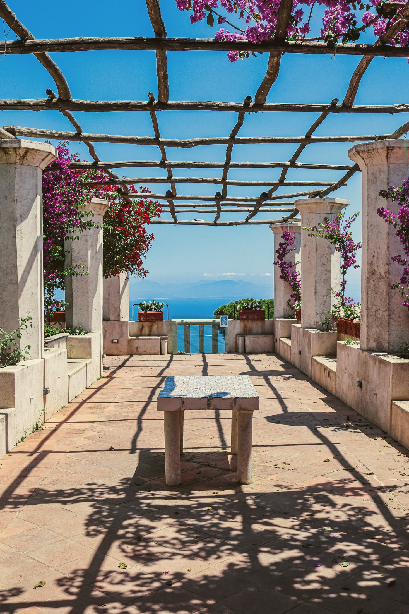

Long tables under late Italian light.



Eight places, eight kinds of light.Lake Como
1 of 3
Where do you see it?
Close your eyes for a moment.
Then choose your perfect setting.

Long tables under late Italian light.

Close your eyes for a moment.
Then choose your perfect setting.